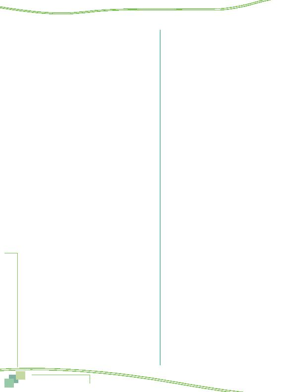

MWCOG-Comm
uter Conn
ecti
on
s-- 2010 State o
f th
e Comm
ute Report
8 4
17 And how many miles?
(IF LESS THAN 1 MILE, RECORD
AS 0.5)
Number of miles ____________________
888 Don't know
999 Refuse
USE OF ALTERNATIVE MODES
IN Q18, <MODE Q15> = ALL MODES 3, 4, 5, 6, 7, 8, 9, 10,
11, 12, 13, 14, 15, 19 NAMED IN Q15
18 How long have you been using
<MODE Q15>
to get
to work?
(DO NOT READ)
IF MORE THAN ONE <MODE Q15>, REPEAT FOR OTHER
<MODE Q15> ADD TO BRIEFING DOCUMENT INSTUCTIONS
IF RESPONDENT SAYS, "DO YOU MEAN HOW LONG
HAVE I BEEN USING <MODE Q15, THIS TYPE OF
TRANSPORTATION> OR HOW LONG I'VE BEEN IN THIS
PARTICULAR <MODE Q15, bus route, carpool, vanpool,
etc.>," INTERVIEWER SHOULD SAY, "USING <MODE Q15,
this type of transportation>.
CODE MONTHS FOR EACH MODE CURRENTLY USED
IF LESS THAN ONE MONTH, CODE 1 MONTH
IF RESPONDENT SAYS "always used," "only used," or
"no other choice/no other option" FOR ANY <MODE
Q15>, CODE MONTHS AS 888.
IF RESPONDENT SAYS, "don't know" FOR ANY <MODE
Q15>, CODE MONTHS AS 999
Number of months
1 N/A
__________
2 N/A
__________
3 drive alone
__________
4 motorcycle
__________
5 carpool
__________
6 casual carpool (slugging)
__________
7 vanpool
__________
8 buspool
__________
9 bus
__________
10 Metrorail
__________
11 MARC
__________
12 VRE
__________
13 AMTRAK, other train
__________
14 Bicycle
__________
15 Walk
__________
16 N/A
__________
17 N/A
__________
18 N/A
__________
19 Taxi
__________
DEFINE RECENT MODE = Q18 MODE WITH FEWEST
MONTHS
IF TIE FOR RECENT MODE, DESIGNATE BOTH MODES AS
RECENT MODE
Skip Q19a Q20b (reasons for change) if respondent has
never used another mode
. IF Q18 = 888 FOR RECENT
MODE, AUTOCODE Q19a = 20, THEN SKIP TO Q22
Skip Q19a Q20b (reasons for change)
if RECENT MODE
duration is more than 3 years.
IF RECENT MODE Q18
DURATION IS GREATER THAN 36 MONTHS, SKIP TO Q22
19a Before starting to <RECENT MODE Q15> to work,
what type or types of transportation did you use
to get to work?
(
ALLOW MULTIPLE MODES 1 15.
DO NOT ACCEPT MULTIPLES FOR 16-21 OR 99)
IF Q12 = 1, 2, OR 3 AND RESPONDENT DOES NOT
MENTION "CWS day off" (RESPONSE 1), ASK: "You said
you typically work a compressed work schedule now. Did
you work a compressed schedule at that time?"
IF Q14 = 4, 5, OR 6 AND RESPONDENT DOES NOT
MENTION "Telecommute" (RESPONSE 2), ASK: "You said
you typically telecommute one or more days per week
now. Did you telecommute at that time?"
(DO NOT READ OTHER RESPONSES)
1 compressed work schedule
2 telecommute
3 drive alone in your car, truck, van
4 motorcycle
5 carpool, including carpool with family member,
dropped off
6 casual carpool (slugging)
7 vanpool
8 buspool
9 bus
10 Metrorail
11 MARC
12 VRE
13 AMTRAK, other train
14 bicycle
15 walk
16 N/A
17 N/A
18 N/A
19 taxi
20 always used, only used
<RECENT MODE Q15>
21 not working then, not in DC area then
99 Don't know, refused
20 What were the reasons you began using
<RECENT
MODE Q15>? (DO NOT READ; CHECK ALL THAT APPLY)
(Probe for the 3 most important and only record
3) (OKAY NOT TO SHOW INFREQUENT INCIDENCE
RESPONSES ON SCREEN CODE AS OTHER THEN CODE TO
PROPER CATEGORIES IN POST-PROCESSING)
Personal circumstances/preferences
1 changed jobs/work hours
2 moved to a different residence
3 employer or worksite moved
4 spouse started new job
Appendix--Survey Questionnaire